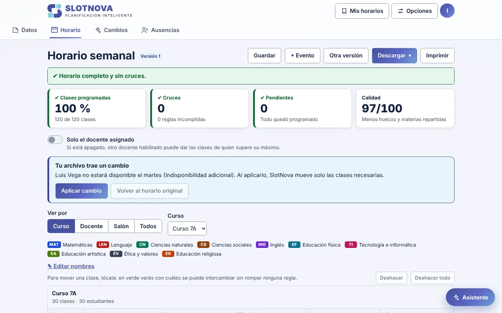
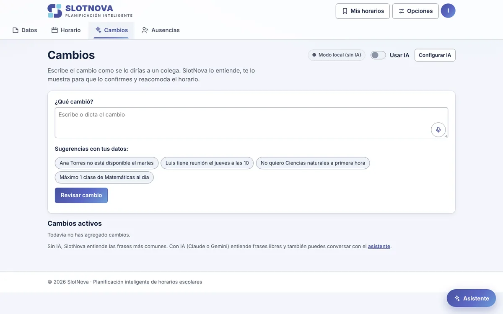
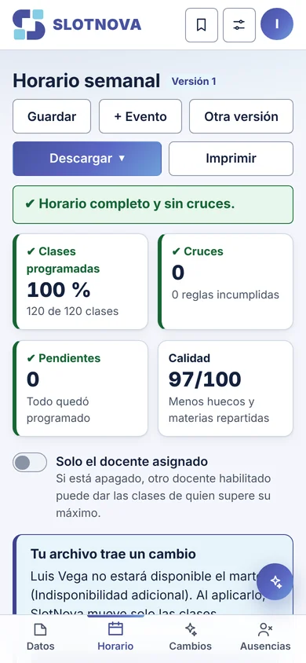

Rediseño
Del troquel a la caja: rediseñar la Cajita Feliz
Diseñar un empaque obliga a pensar en plano y en volumen a la vez. Cómo resolví que las alas siguieran leyéndose una vez armada la caja.
Todo lo que he hecho, repartido en cinco oficios. Elige uno para verlo.
Empaques y etiquetas, campañas para redes, revista, pósteres y pixel art. Piezas donde la marca tiene que sostenerse sola.
Rediseño
Diseñar un empaque obliga a pensar en plano y en volumen a la vez. Cómo resolví que las alas siguieran leyéndose una vez armada la caja.
Proceso creativo
Cinco publicaciones que debían verse como una sola campaña. Lo que aprendí construyendo un sistema visual antes de diseñar la primera pieza.
Ilustración y redacción
Diseñar páginas de revista me enseñó a pensar en bloques de lectura, no solo en imágenes bonitas. Estas son mis conclusiones.
Etiqueta
Una etiqueta que cuenta de dónde viene el café: la arquitectura de la región dibujada a línea dentro de un grano gigante, con una paleta de dos tintas pensada para imprimir.
Pixel art
Dos rostros enfrentados construidos píxel por píxel. Trabajé con pocos colores planos y bordes marcados para que se vea nítido tanto estampado en una camiseta como en un cuadro.
Póster
Historia, circuitos, logros y pilotos en una sola pieza. El reto fue ordenar mucha información con jerarquía clara, usando ilustración a línea y el rojo de la marca para guiar la lectura.
Bodegón, producto, editorial y retrato. Cada foto con su intención: la luz, los objetos y la edición cuentan la historia.
Bodegón
Naturaleza muerta con luz baja y cálida. La copa caída, las velas gastadas, los pétalos y el anillo sobre el mantel cuentan lo que pasó sin mostrar a nadie.
Fotografía de producto
Tres tomas en estudio sobre fondo neutro para mostrar la forma del frasco, los reflejos dorados y el detalle del mosaico de la etiqueta.
Fotografía editorial
Sesión con estilo de los años 20 convertida en portada de revista. Desliza sobre la primera imagen para comparar la toma original con la editada, y toca la portada para verla completa.
Fotografía de emociones
Retrato de perfil con luz lateral. Los ojos cerrados y la mano en el cuello transmiten tranquilidad; quitar el color deja todo el peso en la luz y la piel.
Fotografía de producto
Producto sorpresa con elemento flotante: un postre rosado rodeado de pétalos y rosas suspendidas en el aire, resuelto entre la toma y la edición.
Lo que pasa después de grabar: montaje, ritmo y animación. Cada pieza se reproduce desde acá.
Video institucional
Pieza para las redes del Instituto Técnico Los Patios Centro 2. Los estudiantes cuentan en primera persona cómo cuidan las zonas verdes de la institución. Formato vertical, montaje a ritmo de testimonio.
Video para redes
Reel para la perfumería 1076. La asesora presenta los combos de la campaña en el punto de venta, con el letrero de neón de la marca siempre en cuadro. Corte rápido pensado para consumo en celular.
Animación y Publicidad
Animar un producto no es solo moverlo: es decidir en qué momento se revela la marca. Así construí el timing de esta pieza en After Effects.
Juegos web que programo y diseño yo misma. Petunia es la máquina rival que los une a todos.
Toca una petunia para ver su juego
Páginas y aplicaciones web que diseño y construyo, pensadas para funcionar en computador y en celular.




Hackathon Colombia 5.0 · Reto Gnosoft · Cúcuta 2026
«La IA entiende, el motor garantiza.»
Una aplicación web que arma el horario de un colegio en segundos a partir de su Excel, sin un solo cruce. Explica lo que no se pudo programar y lo reacomoda cuando alguien escribe o dice «Luis no viene el martes». Quedamos en tercer puesto.
Equipo: Santiago Sarmiento, Santiago Colmenares y Cielo Caicedo